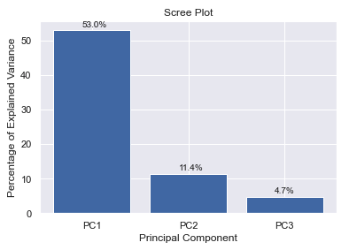
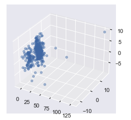

Cluster Analysis
This section talks about the clusters that we have built and used for the model.
Need for clusters
We wanted to forecast unemployment rate for all 401 Kreise of Germany. Of course, we could have create 401 independent time series models, one for each Kreis. However, this would mean that all models won't learn from the unemployment rate time series of other Kreise. We believed that some Kreise must be similar to each other, and can benefit from incorporating each other's data in the forecasting process.
We used unsupervised classification methods to divide Kreise into clusters, based on 176 structural features collected during 2017-2018 for each Kreise. These clusters were later used in hierarchical time series models, and in VAR models.
Type of Clusters
We explored 4 different methods to cluster the Kreise
Bundesland
Each Kreise belongs to one out for 16 Bundeslands. Kreise that belong to the same Bundesland have a similar geographic location, and are also affected by the same decisions that are made on a Bundesland level.

PCA & K-means
We started with clustering using 169 numerical features (disregarding the 7 categorical features).
First, we reduced the features dimension using PCA with 3 components.
- The first component explained 53.0% of the variance of the features, and represented mainly the population size features.
- The second component explained 11.4% of the variance of the features, and represented mainly the rural vs. city features.
- The third component explained 4.7% of the variance of the features, and represented mainly the economical features.


Then, we used K-means to cluster the Kreise into 3 clusters based on the PCA features.


tSNE
We started with clustering using 169 numerical features (disregarding the 7 categorical features).
First, we reduced the features dimension using tSNE with 3 components.

Then, we used K-means to cluster the Kreise into 3 clusters based on the PCA features.

K-modes
To incorporate categorical features as well, we also tried K-modes classification on the original 176 features, both numerical and categorical.
Cluster groups
Bundesland
- Baden-Württemberg: Stuttgart, Böblingen, Esslingen, Göppingen, Ludwigsburg, Rems-Murr-Kreis, Heilbronn, Heilbronn, Hohenlohekreis, Schwäbisch Hall, Main-Tauber-Kreis, Heidenheim, Ostalbkreis, Baden-Baden, Karlsruhe, Karlsruhe, Rastatt, Heidelberg, Mannheim, Neckar-Odenwald-Kreis, Rhein-Neckar-Kreis, Pforzheim, Calw, Enzkreis, Freudenstadt, Freiburg im Breisgau, Breisgau-Hochschwarzwald, Emmendingen, Ortenaukreis, Rottweil, Schwarzwald-Baar-Kreis, Tuttlingen, Konstanz, Lörrach, Waldshut, Reutlingen, Tübingen, Zollernalbkreis, Ulm, Alb-Donau-Kreis, Biberach, Bodenseekreis, Ravensburg, Sigmaringen
- Berlin: Berlin
- Brandenburg: Brandenburg an der Havel, Cottbus, Frankfurt (Oder), Potsdam, Barnim, Dahme-Spreewald, Elbe-Elster, Havelland, Märkisch-Oderland, Oberhavel, Oberspreewald-Lausitz, Oder-Spree, Ostprignitz-Ruppin, Potsdam-Mittelmark, Prignitz, Spree-Neiße, Teltow-Fläming, Uckermark
- Bremen: Bremen, Bremerhaven
- Freistaat Bayern: Ingolstadt, München, Rosenheim, Altötting, Berchtesgadener Land, Bad Tölz-Wolfratshausen, Dachau, Ebersberg, Eichstätt, Erding, Freising, Fürstenfeldbruck, Garmisch-Partenkirchen, Landsberg am Lech, Miesbach, Mühldorf a.Inn, München, Neuburg-Schrobenhausen, Pfaffenhofen a.d.Ilm, Rosenheim, Starnberg, Traunstein, Weilheim-Schongau, Landshut, Passau, Straubing, Deggendorf, Freyung-Grafenau, Kelheim, Landshut, Passau, Regen, Rottal-Inn, Straubing-Bogen, Dingolfing-Landau, Amberg, Regensburg, Weiden i.d.OPf., Amberg-Sulzbach, Cham, Neumarkt i.d.OPf., Neustadt a.d.Waldnaab, Regensburg, Schwandorf, Tirschenreuth, Bamberg, Bayreuth, Coburg, Hof, Bamberg, Bayreuth, Coburg, Forchheim, Hof, Kronach, Kulmbach, Lichtenfels, Wunsiedel i.Fichtelgebirge, Ansbach, Erlangen, Fürth, Nürnberg, Schwabach, Ansbach, Erlangen-Höchstadt, Fürth, Nürnberger Land, Neustadt a.d.Aisch-Bad Windsheim, Roth, Weißenburg-Gunzenhausen, Aschaffenburg, Schweinfurt, Würzburg, Aschaffenburg, Bad Kissingen, Rhön-Grabfeld, Haßberge, Kitzingen, Miltenberg, Main-Spessart, Schweinfurt, Würzburg, Augsburg, Kaufbeuren, Kempten (Allgäu), Memmingen, Aichach-Friedberg, Augsburg, Dillingen a.d.Donau, Günzburg, Neu-Ulm, Lindau (Bodensee), Ostallgäu, Unterallgäu, Donau-Ries, Oberallgäu
- Hamburg: Hamburg
- Hessen: Kreisfreie Stadt Darmstadt, Kreisfreie Stadt Frankfurt am Main, Kreisfreie Stadt Offenbach am Main, Landeshauptstadt Wiesbaden, Bergstraße, Darmstadt-Dieburg, Groß-Gerau, Hochtaunus, Main-Kinzig, Main-Taunus, Odenwaldkreis, Offenbach, Rheingau-Taunus, Wetterau, Gießen, Lahn-Dill, Limburg-Weilburg, Marburg-Biedenkopf, Vogelsberg, Kreisfreie Stadt Kassel, Fulda, Hersfeld-Rotenburg, Kassel, Schwalm-Eder, Waldeck-Frankenberg, Werra-Meißner
- Mecklenburg-Vorpommern: Rostock, Hansestadt, Schwerin, Landeshauptstadt, Mecklenburgische Seenplatte, Landkreis Rostock, Vorpommern-Rügen, Nordwestmecklenburg, Vorpommern-Greifswald, Ludwigslust-Parchim
- Niedersachsen: Braunschweig, Salzgitter, Wolfsburg, Gifhorn, Goslar, Helmstedt, Northeim, Peine, Wolfenbüttel, Göttingen, Hannover, Diepholz, Hameln-Pyrmont, Hildesheim, Holzminden, Nienburg/Weser, Schaumburg, Celle, Cuxhaven, Harburg, Lüchow-Dannenberg, Lüneburg, Osterholz, Rotenburg (Wümme), Heidekreis, Stade, Uelzen, Verden, Delmenhorst, Emden, Oldenburg, Osnabrück, Wilhelmshaven, Ammerland, Aurich, Cloppenburg, Emsland, Friesland, Grafschaft Bentheim, Leer, Oldenburg, Osnabrück, Vechta, Wesermarsch, Wittmund
- Nordrhein-Westfalen: Düsseldorf, Duisburg, Essen, Krefeld, Mönchengladbach, Mülheim an der Ruhr, Oberhausen, Remscheid, Solingen, Wuppertal, Kleve, Mettmann, Rhein-Kreis Neuss, Viersen, Wesel, Bonn, Köln, Leverkusen, Aachen, Düren, Rhein-Erft-Kreis, Euskirchen, Heinsberg, Oberbergischer Kreis, Rheinisch-Bergischer Kreis, Rhein-Sieg-Kreis, Bottrop, Gelsenkirchen, Münster, Borken, Coesfeld, Recklinghausen, Steinfurt, Warendorf, Bielefeld, Gütersloh, Herford, Höxter, Lippe, Minden-Lübbecke, Paderborn, Bochum, Dortmund, Hagen, Hamm, Herne, Ennepe-Ruhr-Kreis, Hochsauerlandkreis, Märkischer Kreis, Olpe, Siegen-Wittgenstein, Soest, Unna
- Rheinland-Pfalz: Stadt Koblenz, Ahrweiler, Altenkirchen (Ww), Bad Kreuznach, Birkenfeld, Cochem-Zell, Mayen-Koblenz, Neuwied, Rhein-Hunsrück-Kreis, Rhein-Lahn-Kreis, Westerwaldkreis, Stadt Trier, Bernkastel-Wittlich, Eifelkreis Bitburg-Prüm, Vulkaneifel, Trier-Saarburg, Stadt Frankenthal (Pfalz), Stadt Kaiserslautern, Stadt Landau in der Pfalz, Stadt Ludwigshafen a. Rh., Stadt Mainz, Stadt Neustadt a.d. W., Stadt Pirmasens, Stadt Speyer, Stadt Worms, Stadt Zweibrücken, Alzey-Worms, Bad Dürkheim, Donnersbergkreis, Germersheim, Kaiserslautern, Kusel, Südliche Weinstraße, Rhein-Pfalz-Kreis, Mainz-Bingen, Südwestpfalz
- Saarland: Regionalverband Saarbrücken, Landkreis Merzig-Wadern, Landkreis Neunkirchen, Landkreis Saarlouis, Saarpfalz-Kreis, Landkreis St. Wendel
- Sachsen: Chemnitz, Erzgebirgskreis, Mittelsachsen, Vogtlandkreis, Zwickau, Dresden, Bautzen, Görlitz, Meißen, Sächsische Schweiz-Osterzgebirge, Leipzig, Leipzig, Nordsachsen
- Sachsen-Anhalt: Dessau-Roßlau, Halle (Saale), Magdeburg, Altmarkkreis Salzwedel, Anhalt-Bitterfeld, Börde, Burgenlandkreis, Harz, Jerichower Land, Mansfeld-Südharz, Saalekreis, Salzlandkreis, Stendal, Wittenberg
- Schleswig-Holstein : Flensburg, Stadt, Kiel, Landeshauptstadt, Lübeck, Hansestadt, Neumünster, Stadt, Dithmarschen, Herzogtum Lauenburg, Nordfriesland, Ostholstein, Pinneberg, Plön, Rendsburg-Eckernförde, Schleswig-Flensburg, Segeberg, Steinburg, Stormarn
- Thüringen: Erfurt, Gera, Jena, Suhl, Weimar, Eisenach, Eichsfeld, Nordhausen, Wartburgkreis, Unstrut-Hainich-Kreis, Kyffhäuserkreis, Schmalkalden-Meiningen, Gotha, Sömmerda, Hildburghausen, Ilm-Kreis, Weimarer Land, Sonneberg, Saalfeld-Rudolstadt, Saale-Holzland-Kreis, Saale-Orla-Kreis, Greiz, Altenburger Land
PCA & K-means
- Cluster 1: Flensburg, Stadt, Neumünster, Stadt, Dithmarschen, Herzogtum Lauenburg, Nordfriesland, Ostholstein, Pinneberg, Plön, Rendsburg-Eckernförde, Schleswig-Flensburg, Segeberg, Steinburg, Stormarn, Salzgitter, Wolfsburg, Gifhorn, Goslar, Helmstedt, Northeim, Peine, Wolfenbüttel, Göttingen, Diepholz, Hameln-Pyrmont, Hildesheim, Holzminden, Nienburg/Weser, Schaumburg, Celle, Cuxhaven, Harburg, Lüchow-Dannenberg, Lüneburg, Osterholz, Rotenburg (Wümme), Heidekreis, Stade, Uelzen, Verden, Delmenhorst, Emden, Oldenburg, Stadt, Osnabrück, Stadt, Wilhelmshaven, Ammerland, Aurich, Cloppenburg, Emsland, Friesland, Grafschaft Bentheim, Leer, Oldenburg, Kreis, Osnabrück, Kreis, Vechta, Wesermarsch, Wittmund, Bremerhaven, Mülheim an der Ruhr, Remscheid, Solingen, Kleve, Viersen, Leverkusen, Düren, Euskirchen, Heinsberg, Oberbergischer Kreis, Rheinisch-Bergischer Kreis, Bottrop, Coesfeld, Warendorf, Herford, Höxter, Lippe, Minden-Lübbecke, Paderborn, Hagen, Hamm, Hochsauerlandkreis, Olpe, Siegen-Wittgenstein, Soest, Bergstraße, Darmstadt-Dieburg, Hochtaunus, Main-Taunus, Odenwaldkreis, Rheingau-Taunus, Wetterau, Gießen, Lahn-Dill, Limburg-Weilburg, Marburg-Biedenkopf, Vogelsberg, Fulda, Hersfeld-Rotenburg, Kassel, Schwalm-Eder, Waldeck-Frankenberg, Werra-Meißner, Stadt Koblenz, Ahrweiler, Altenkirchen (Ww), Bad Kreuznach, Birkenfeld, Cochem-Zell, Mayen-Koblenz, Neuwied, Rhein-Hunsrück-Kreis, Rhein-Lahn-Kreis, Westerwaldkreis, Stadt Trier, Bernkastel-Wittlich, Eifelkreis Bitburg-Prüm, Vulkaneifel, Trier-Saarburg, Stadt Frankenthal (Pfalz), Stadt Kaiserslautern, Stadt Landau in der Pfalz, Stadt Neustadt a.d. W., Stadt Pirmasens, Stadt Speyer, Stadt Worms, Stadt Zweibrücken, Alzey-Worms, Bad Dürkheim, Donnersbergkreis, Germersheim, Kaiserslautern, Kusel, Südliche Weinstraße, Rhein-Pfalz-Kreis, Mainz-Bingen, Südwestpfalz, Göppingen, Heilbronn, Stadt, Heilbronn, Kreis, Hohenlohekreis, Schwäbisch Hall, Main-Tauber-Kreis, Heidenheim, Ostalbkreis, Baden-Baden, Rastatt, Neckar-Odenwald-Kreis, Pforzheim, Calw, Enzkreis, Freudenstadt, Breisgau-Hochschwarzwald, Emmendingen, Rottweil, Schwarzwald-Baar-Kreis, Tuttlingen, Konstanz, Lörrach, Waldshut, Reutlingen, Tübingen, Zollernalbkreis, Ulm, Alb-Donau-Kreis, Biberach, Bodenseekreis, Ravensburg, Sigmaringen, Ingolstadt, Altötting, Berchtesgadener Land, Bad Tölz-Wolfratshausen, Dachau, Ebersberg, Eichstätt, Erding, Freising, Fürstenfeldbruck, Garmisch-Partenkirchen, Landsberg am Lech, Miesbach, Mühldorf a.Inn, Neuburg-Schrobenhausen, Pfaffenhofen a.d.Ilm, Rosenheim, Kreis, Starnberg, Traunstein, Weilheim-Schongau, Landshut, Stadt, Passau, Stadt, Straubing, Deggendorf, Freyung-Grafenau, Kelheim, Landshut, Kreis, Passau, Kreis, Regen, Rottal-Inn, Straubing-Bogen, Dingolfing-Landau, Amberg, Weiden i.d.OPf., Amberg-Sulzbach, Cham, Neumarkt i.d.OPf., Neustadt a.d.Waldnaab, Regensburg, Kreis, Schwandorf, Tirschenreuth, Bamberg, Stadt, Bayreuth, Stadt, Coburg, Stadt, Hof, Stadt, Bamberg, Kreis, Bayreuth, Kreis, Coburg, Kreis, Forchheim, Hof, Kreis, Kronach, Kulmbach, Lichtenfels, Wunsiedel i.Fichtelgebirge, Ansbach, Stadt, Erlangen, Fürth, Stadt, Schwabach, Ansbach, Kreis, Erlangen-Höchstadt, Fürth, Kreis, Nürnberger Land, Neustadt a.d.Aisch-Bad Windsheim, Roth, Weißenburg-Gunzenhausen, Aschaffenburg, Stadt, Schweinfurt, Stadt, Würzburg, Stadt, Aschaffenburg, Kreis, Bad Kissingen, Rhön-Grabfeld, Haßberge, Kitzingen, Miltenberg, Main-Spessart, Schweinfurt, Kreis, Würzburg, Kreis, Kaufbeuren, Kempten (Allgäu), Memmingen, Aichach-Friedberg, Augsburg, Kreis, Dillingen a.d.Donau, Günzburg, Neu-Ulm, Lindau (Bodensee), Ostallgäu, Unterallgäu, Donau-Ries, Oberallgäu, Landkreis Merzig-Wadern, Landkreis Neunkirchen, Landkreis Saarlouis, Saarpfalz-Kreis, Landkreis St. Wendel, Brandenburg an der Havel, Cottbus, Frankfurt (Oder), Potsdam, Barnim, Dahme-Spreewald, Elbe-Elster, Havelland, Märkisch-Oderland, Oberhavel, Oberspreewald-Lausitz, Oder-Spree, Ostprignitz-Ruppin, Potsdam-Mittelmark, Prignitz, Spree-Neiße, Teltow-Fläming, Uckermark, Rostock, Hansestadt, Schwerin, Landeshauptstadt, Mecklenburgische Seenplatte, Landkreis Rostock, Vorpommern-Rügen, Nordwestmecklenburg, Vorpommern-Greifswald, Ludwigslust-Parchim, Chemnitz, Erzgebirgskreis, Mittelsachsen, Vogtlandkreis, Zwickau, Bautzen, Görlitz, Meißen, Sächsische Schweiz-Osterzgebirge, Leipzig, Kreis, Nordsachsen, Dessau-Roßlau, Altmarkkreis Salzwedel, Anhalt-Bitterfeld, Börde, Burgenlandkreis, Harz, Jerichower Land, Mansfeld-Südharz, Saalekreis, Salzlandkreis, Stendal, Wittenberg, Gera, Jena, Suhl, Weimar, Eisenach, Eichsfeld, Nordhausen, Wartburgkreis, Unstrut-Hainich-Kreis, Kyffhäuserkreis, Schmalkalden-Meiningen, Gotha, Sömmerda, Hildburghausen, Ilm-Kreis, Weimarer Land, Sonneberg, Saalfeld-Rudolstadt, Saale-Holzland-Kreis, Saale-Orla-Kreis, Greiz, Altenburger Land
- Cluster 2: Hamburg, Berlin
- Cluster 3: Kiel, Landeshauptstadt, Lübeck, Hansestadt, Braunschweig, Hannover, Bremen, Düsseldorf, Duisburg, Essen, Krefeld, Mönchengladbach, Oberhausen, Wuppertal, Mettmann, Rhein-Kreis Neuss, Wesel, Bonn, Köln, Aachen, Rhein-Erft-Kreis, Rhein-Sieg-Kreis, Gelsenkirchen, Münster, Borken, Recklinghausen, Steinfurt, Bielefeld, Gütersloh, Bochum, Dortmund, Herne, Ennepe-Ruhr-Kreis, Märkischer Kreis, Unna, Kreisfreie Stadt Darmstadt, Kreisfreie Stadt Frankfurt am Main, Kreisfreie Stadt Offenbach am Main, Landeshauptstadt Wiesbaden, Groß-Gerau, Main-Kinzig, Offenbach, Kreisfreie Stadt Kassel, Stadt Ludwigshafen a. Rh., Stadt Mainz, Stuttgart, Böblingen, Esslingen, Ludwigsburg, Rems-Murr-Kreis, Karlsruhe, Stadt, Karlsruhe, Kreis, Heidelberg, Mannheim, Rhein-Neckar-Kreis, Freiburg im Breisgau, Ortenaukreis, München, Landeshauptstadt, Rosenheim, Stadt, München, Kreis, Regensburg, Stadt, Nürnberg, Augsburg, Stadt, Regionalverband Saarbrücken, Dresden, Leipzig, Stadt, Halle (Saale), Magdeburg, Erfurt
tSNE & K-means
- Cluster 1: Dithmarschen, Herzogtum Lauenburg, Nordfriesland, Ostholstein, Plön, Schleswig-Flensburg, Steinburg, Goslar, Helmstedt, Northeim, Peine, Wolfenbüttel, Hameln-Pyrmont, Holzminden, Schaumburg, Celle, Lüchow-Dannenberg, Lüneburg, Osterholz, Heidekreis, Uelzen, Ammerland, Aurich, Friesland, Leer, Wesermarsch, Wittmund, Bottrop, Höxter, Odenwaldkreis, Vogelsberg, Hersfeld-Rotenburg, Schwalm-Eder, Waldeck-Frankenberg, Werra-Meißner, Ahrweiler, Altenkirchen (Ww), Bad Kreuznach, Birkenfeld, Cochem-Zell, Rhein-Hunsrück-Kreis, Rhein-Lahn-Kreis, Bernkastel-Wittlich, Eifelkreis Bitburg-Prüm, Vulkaneifel, Trier-Saarburg, Stadt Zweibrücken, Bad Dürkheim, Donnersbergkreis, Kaiserslautern, Kusel, Südliche Weinstraße, Südwestpfalz, Hohenlohekreis, Schwäbisch Hall, Main-Tauber-Kreis, Neckar-Odenwald-Kreis, Freudenstadt, Sigmaringen, Altötting, Berchtesgadener Land, Bad Tölz-Wolfratshausen, Eichstätt, Erding, Garmisch-Partenkirchen, Landsberg am Lech, Miesbach, Mühldorf a.Inn, Neuburg-Schrobenhausen, Pfaffenhofen a.d.Ilm, Traunstein, Deggendorf, Freyung-Grafenau, Kelheim, Landshut, Kreis, Passau, Kreis, Regen, Rottal-Inn, Straubing-Bogen, Dingolfing-Landau, Amberg-Sulzbach, Cham, Neumarkt i.d.OPf., Neustadt a.d.Waldnaab, Regensburg, Kreis, Schwandorf, Tirschenreuth, Bamberg, Kreis, Bayreuth, Kreis, Coburg, Kreis, Forchheim, Hof, Kreis, Kronach, Kulmbach, Lichtenfels, Wunsiedel i.Fichtelgebirge, Ansbach, Kreis, Neustadt a.d.Aisch-Bad Windsheim, Roth, Weißenburg-Gunzenhausen, Bad Kissingen, Rhön-Grabfeld, Haßberge, Kitzingen, Main-Spessart, Schweinfurt, Kreis, Aichach-Friedberg, Dillingen a.d.Donau, Günzburg, Ostallgäu, Unterallgäu, Donau-Ries, Oberallgäu, Landkreis Merzig-Wadern, Landkreis Neunkirchen, Landkreis Saarlouis, Saarpfalz-Kreis, Landkreis St. Wendel, Cottbus, Barnim, Dahme-Spreewald, Elbe-Elster, Havelland, Märkisch-Oderland, Oberhavel, Oberspreewald-Lausitz, Oder-Spree, Ostprignitz-Ruppin, Potsdam-Mittelmark, Prignitz, Spree-Neiße, Teltow-Fläming, Uckermark, Rostock, Hansestadt, Mecklenburgische Seenplatte, Landkreis Rostock, Vorpommern-Rügen, Nordwestmecklenburg, Vorpommern-Greifswald, Ludwigslust-Parchim, Chemnitz, Erzgebirgskreis, Mittelsachsen, Vogtlandkreis, Zwickau, Bautzen, Görlitz, Meißen, Sächsische Schweiz-Osterzgebirge, Leipzig, Kreis, Nordsachsen, Altmarkkreis Salzwedel, Anhalt-Bitterfeld, Börde, Burgenlandkreis, Harz, Jerichower Land, Mansfeld-Südharz, Saalekreis, Salzlandkreis, Stendal, Wittenberg, Eichsfeld, Nordhausen, Wartburgkreis, Unstrut-Hainich-Kreis, Kyffhäuserkreis, Schmalkalden-Meiningen, Gotha, Sömmerda, Hildburghausen, Ilm-Kreis, Weimarer Land, Sonneberg, Saalfeld-Rudolstadt, Saale-Holzland-Kreis, Saale-Orla-Kreis, Greiz, Altenburger Land
- Cluster 2: Pinneberg, Rendsburg-Eckernförde, Segeberg, Stormarn, Hamburg, Gifhorn, Göttingen, Hannover, Diepholz, Hildesheim, Nienburg/Weser, Cuxhaven, Harburg, Rotenburg (Wümme), Stade, Verden, Cloppenburg, Emsland, Grafschaft Bentheim, Oldenburg, Kreis, Osnabrück, Kreis, Vechta, Kleve, Mettmann, Rhein-Kreis Neuss, Viersen, Wesel, Köln, Aachen, Düren, Rhein-Erft-Kreis, Euskirchen, Heinsberg, Oberbergischer Kreis, Rheinisch-Bergischer Kreis, Rhein-Sieg-Kreis, Borken, Coesfeld, Recklinghausen, Steinfurt, Warendorf, Gütersloh, Herford, Lippe, Minden-Lübbecke, Paderborn, Ennepe-Ruhr-Kreis, Hochsauerlandkreis, Märkischer Kreis, Olpe, Siegen-Wittgenstein, Soest, Unna, Kreisfreie Stadt Frankfurt am Main, Kreisfreie Stadt Offenbach am Main, Bergstraße, Darmstadt-Dieburg, Groß-Gerau, Hochtaunus, Main-Kinzig, Main-Taunus, Offenbach, Rheingau-Taunus, Wetterau, Gießen, Lahn-Dill, Limburg-Weilburg, Marburg-Biedenkopf, Fulda, Kassel, Mayen-Koblenz, Neuwied, Westerwaldkreis, Alzey-Worms, Germersheim, Rhein-Pfalz-Kreis, Mainz-Bingen, Stuttgart, Böblingen, Esslingen, Göppingen, Ludwigsburg, Rems-Murr-Kreis, Heilbronn, Kreis, Heidenheim, Ostalbkreis, Baden-Baden, Karlsruhe, Kreis, Rastatt, Rhein-Neckar-Kreis, Pforzheim, Calw, Enzkreis, Breisgau-Hochschwarzwald, Emmendingen, Ortenaukreis, Rottweil, Schwarzwald-Baar-Kreis, Tuttlingen, Konstanz, Lörrach, Waldshut, Reutlingen, Tübingen, Zollernalbkreis, Alb-Donau-Kreis, Biberach, Bodenseekreis, Ravensburg, München, Landeshauptstadt, Rosenheim, Stadt, Dachau, Ebersberg, Freising, Fürstenfeldbruck, München, Kreis, Rosenheim, Kreis, Starnberg, Weilheim-Schongau, Erlangen-Höchstadt, Fürth, Kreis, Nürnberger Land, Aschaffenburg, Kreis, Miltenberg, Würzburg, Kreis, Augsburg, Kreis, Neu-Ulm, Regionalverband Saarbrücken, Berlin
- Cluster 3: Flensburg, Stadt, Kiel, Landeshauptstadt, Lübeck, Hansestadt, Neumünster, Stadt, Braunschweig, Salzgitter, Wolfsburg, Delmenhorst, Emden, Oldenburg, Stadt, Osnabrück, Stadt, Wilhelmshaven, Bremen, Bremerhaven, Düsseldorf, Duisburg, Essen, Krefeld, Mönchengladbach, Mülheim an der Ruhr, Oberhausen, Remscheid, Solingen, Wuppertal, Bonn, Leverkusen, Gelsenkirchen, Münster, Bielefeld, Bochum, Dortmund, Hagen, Hamm, Herne, Kreisfreie Stadt Darmstadt, Landeshauptstadt Wiesbaden, Kreisfreie Stadt Kassel, Stadt Koblenz, Stadt Trier, Stadt Frankenthal (Pfalz), Stadt Kaiserslautern, Stadt Landau in der Pfalz, Stadt Ludwigshafen a. Rh., Stadt Mainz, Stadt Neustadt a.d. W., Stadt Pirmasens, Stadt Speyer, Stadt Worms, Heilbronn, Stadt, Karlsruhe, Stadt, Heidelberg, Mannheim, Freiburg im Breisgau, Ulm, Ingolstadt, Landshut, Stadt, Passau, Stadt, Straubing, Amberg, Regensburg, Stadt, Weiden i.d.OPf., Bamberg, Stadt, Bayreuth, Stadt, Coburg, Stadt, Hof, Stadt, Ansbach, Stadt, Erlangen, Fürth, Stadt, Nürnberg, Schwabach, Aschaffenburg, Stadt, Schweinfurt, Stadt, Würzburg, Stadt, Augsburg, Stadt, Kaufbeuren, Kempten (Allgäu), Memmingen, Lindau (Bodensee), Brandenburg an der Havel, Frankfurt (Oder), Potsdam, Schwerin, Landeshauptstadt, Dresden, Leipzig, Stadt, Dessau-Roßlau, Halle (Saale), Magdeburg, Erfurt, Gera, Jena, Suhl, Weimar, Eisenach
K-modes
- Cluster 1: Neumünster, Stadt, Herzogtum Lauenburg, Ostholstein, Rendsburg-Eckernförde, Schleswig-Flensburg, Segeberg, Wolfenbüttel, Hameln-Pyrmont, Nienburg/Weser, Celle, Cuxhaven, Rotenburg (Wümme), Stade, Verden, Delmenhorst, Emden, Wilhelmshaven, Aurich, Cloppenburg, Emsland, Grafschaft Bentheim, Leer, Vechta, Warendorf, Höxter, Hochsauerlandkreis, Olpe, Marburg-Biedenkopf, Fulda, Hersfeld-Rotenburg, Schwalm-Eder, Stadt Koblenz, Ahrweiler, Bad Kreuznach, Rhein-Hunsrück-Kreis, Bernkastel-Wittlich, Eifelkreis Bitburg-Prüm, Trier-Saarburg, Donnersbergkreis, Kusel, Südwestpfalz, Hohenlohekreis, Schwäbisch Hall, Main-Tauber-Kreis, Neckar-Odenwald-Kreis, Freudenstadt, Waldshut, Alb-Donau-Kreis, Biberach, Sigmaringen, Ingolstadt, Altötting, Berchtesgadener Land, Bad Tölz-Wolfratshausen, Eichstätt, Erding, Garmisch-Partenkirchen, Landsberg am Lech, Miesbach, Mühldorf a.Inn, Neuburg-Schrobenhausen, Pfaffenhofen a.d.Ilm, Rosenheim, Kreis, Traunstein, Weilheim-Schongau, Landshut, Stadt, Passau, Stadt, Straubing, Deggendorf, Kelheim, Landshut, Kreis, Passau, Kreis, Regen, Rottal-Inn, Straubing-Bogen, Dingolfing-Landau, Neumarkt i.d.OPf., Regensburg, Kreis, Schwandorf, Bamberg, Stadt, Bayreuth, Stadt, Coburg, Stadt, Hof, Stadt, Bamberg, Kreis, Bayreuth, Kreis, Coburg, Kreis, Forchheim, Hof, Kreis, Kronach, Lichtenfels, Ansbach, Stadt, Ansbach, Kreis, Roth, Weißenburg-Gunzenhausen, Schweinfurt, Stadt, Rhön-Grabfeld, Kitzingen, Miltenberg, Main-Spessart, Schweinfurt, Kreis, Kempten (Allgäu), Memmingen, Aichach-Friedberg, Dillingen a.d.Donau, Günzburg, Ostallgäu, Unterallgäu, Donau-Ries, Brandenburg an der Havel, Cottbus, Nordwestmecklenburg, Anhalt-Bitterfeld, Burgenlandkreis, Altenburger Land
- Cluster 2: Flensburg, Stadt, Dithmarschen, Nordfriesland, Plön, Steinburg, Gifhorn, Goslar, Helmstedt, Northeim, Holzminden, Lüchow-Dannenberg, Lüneburg, Heidekreis, Uelzen, Wesermarsch, Wittmund, Vogelsberg, Waldeck-Frankenberg, Werra-Meißner, Birkenfeld, Cochem-Zell, Vulkaneifel, Freyung-Grafenau, Amberg, Weiden i.d.OPf., Amberg-Sulzbach, Cham, Neustadt a.d.Waldnaab, Tirschenreuth, Kulmbach, Wunsiedel i.Fichtelgebirge, Neustadt a.d.Aisch-Bad Windsheim, Bad Kissingen, Haßberge, Kaufbeuren, Oberallgäu, Frankfurt (Oder), Potsdam, Barnim, Dahme-Spreewald, Elbe-Elster, Havelland, Märkisch-Oderland, Oberhavel, Oberspreewald-Lausitz, Oder-Spree, Ostprignitz-Ruppin, Potsdam-Mittelmark, Prignitz, Spree-Neiße, Teltow-Fläming, Uckermark, Schwerin, Landeshauptstadt, Mecklenburgische Seenplatte, Landkreis Rostock, Vorpommern-Rügen, Vorpommern-Greifswald, Ludwigslust-Parchim, Erzgebirgskreis, Mittelsachsen, Vogtlandkreis, Zwickau, Bautzen, Görlitz, Meißen, Sächsische Schweiz-Osterzgebirge, Nordsachsen, Dessau-Roßlau, Magdeburg, Altmarkkreis Salzwedel, Börde, Harz, Jerichower Land, Mansfeld-Südharz, Saalekreis, Salzlandkreis, Stendal, Wittenberg, Erfurt, Gera, Suhl, Eisenach, Eichsfeld, Nordhausen, Wartburgkreis, Unstrut-Hainich-Kreis, Kyffhäuserkreis, Schmalkalden-Meiningen, Gotha, Sömmerda, Hildburghausen, Ilm-Kreis, Sonneberg, Saalfeld-Rudolstadt, Saale-Holzland-Kreis, Saale-Orla-Kreis, Greiz
- Cluster 3: Kiel, Landeshauptstadt, Lübeck, Hansestadt, Pinneberg, Stormarn, Hamburg, Braunschweig, Salzgitter, Wolfsburg, Peine, Göttingen, Hannover, Diepholz, Hildesheim, Schaumburg, Harburg, Osterholz, Oldenburg, Stadt, Osnabrück, Stadt, Ammerland, Friesland, Oldenburg, Kreis, Osnabrück, Kreis, Bremen, Bremerhaven, Düsseldorf, Duisburg, Essen, Krefeld, Mönchengladbach, Mülheim an der Ruhr, Oberhausen, Remscheid, Solingen, Wuppertal, Kleve, Mettmann, Rhein-Kreis Neuss, Viersen, Wesel, Bonn, Köln, Leverkusen, Aachen, Düren, Rhein-Erft-Kreis, Euskirchen, Heinsberg, Oberbergischer Kreis, Rheinisch-Bergischer Kreis, Rhein-Sieg-Kreis, Bottrop, Gelsenkirchen, Münster, Borken, Coesfeld, Recklinghausen, Steinfurt, Bielefeld, Gütersloh, Herford, Lippe, Minden-Lübbecke, Paderborn, Bochum, Dortmund, Hagen, Hamm, Herne, Ennepe-Ruhr-Kreis, Märkischer Kreis, Siegen-Wittgenstein, Soest, Unna, Kreisfreie Stadt Darmstadt, Kreisfreie Stadt Frankfurt am Main, Kreisfreie Stadt Offenbach am Main, Landeshauptstadt Wiesbaden, Bergstraße, Darmstadt-Dieburg, Groß-Gerau, Hochtaunus, Main-Kinzig, Main-Taunus, Odenwaldkreis, Offenbach, Rheingau-Taunus, Wetterau, Gießen, Lahn-Dill, Limburg-Weilburg, Kreisfreie Stadt Kassel, Kassel, Altenkirchen (Ww), Mayen-Koblenz, Neuwied, Rhein-Lahn-Kreis, Westerwaldkreis, Stadt Trier, Stadt Frankenthal (Pfalz), Stadt Kaiserslautern, Stadt Landau in der Pfalz, Stadt Ludwigshafen a. Rh., Stadt Mainz, Stadt Neustadt a.d. W., Stadt Pirmasens, Stadt Speyer, Stadt Worms, Stadt Zweibrücken, Alzey-Worms, Bad Dürkheim, Germersheim, Kaiserslautern, Südliche Weinstraße, Rhein-Pfalz-Kreis, Mainz-Bingen, Stuttgart, Böblingen, Esslingen, Göppingen, Ludwigsburg, Rems-Murr-Kreis, Heilbronn, Stadt, Heilbronn, Kreis, Heidenheim, Ostalbkreis, Baden-Baden, Karlsruhe, Stadt, Karlsruhe, Kreis, Rastatt, Heidelberg, Mannheim, Rhein-Neckar-Kreis, Pforzheim, Calw, Enzkreis, Freiburg im Breisgau, Breisgau-Hochschwarzwald, Emmendingen, Ortenaukreis, Rottweil, Schwarzwald-Baar-Kreis, Tuttlingen, Konstanz, Lörrach, Reutlingen, Tübingen, Zollernalbkreis, Ulm, Bodenseekreis, Ravensburg, München, Landeshauptstadt, Rosenheim, Stadt, Dachau, Ebersberg, Freising, Fürstenfeldbruck, München, Kreis, Starnberg, Regensburg, Stadt, Erlangen, Fürth, Stadt, Nürnberg, Schwabach, Erlangen-Höchstadt, Fürth, Kreis, Nürnberger Land, Aschaffenburg, Stadt, Würzburg, Stadt, Aschaffenburg, Kreis, Würzburg, Kreis, Augsburg, Stadt, Augsburg, Kreis, Neu-Ulm, Lindau (Bodensee), Regionalverband Saarbrücken, Landkreis Merzig-Wadern, Landkreis Neunkirchen, Landkreis Saarlouis, Saarpfalz-Kreis, Landkreis St. Wendel, Berlin, Rostock, Hansestadt, Chemnitz, Dresden, Leipzig, Stadt, Leipzig, Kreis, Halle (Saale), Jena, Weimar, Weimarer Land